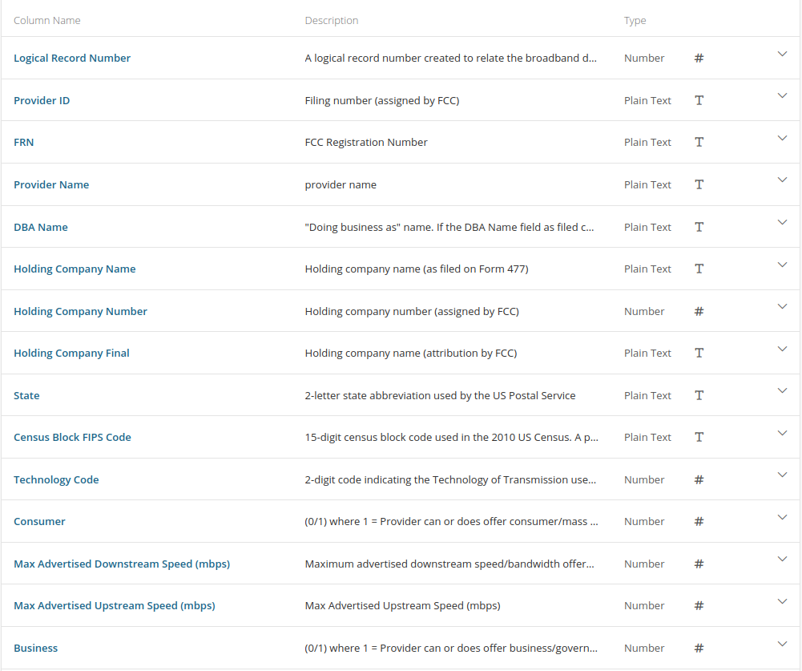
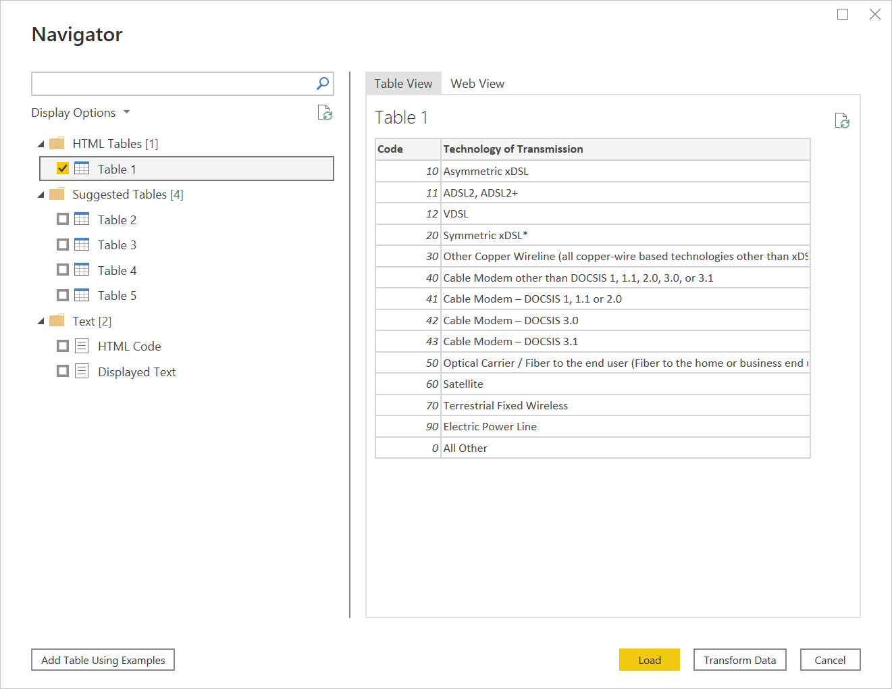
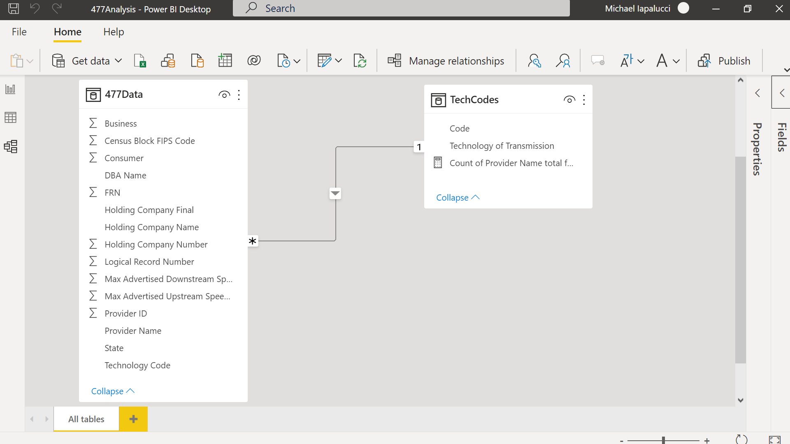
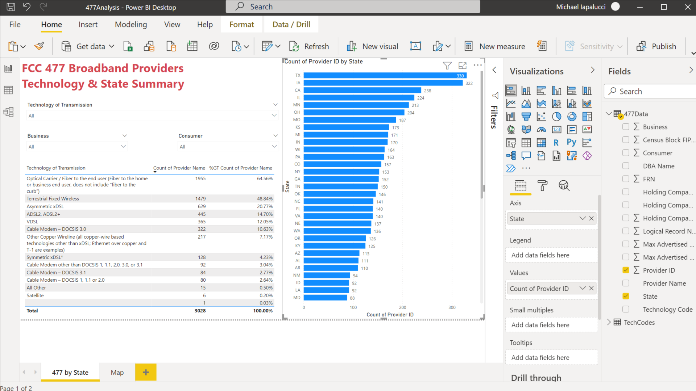
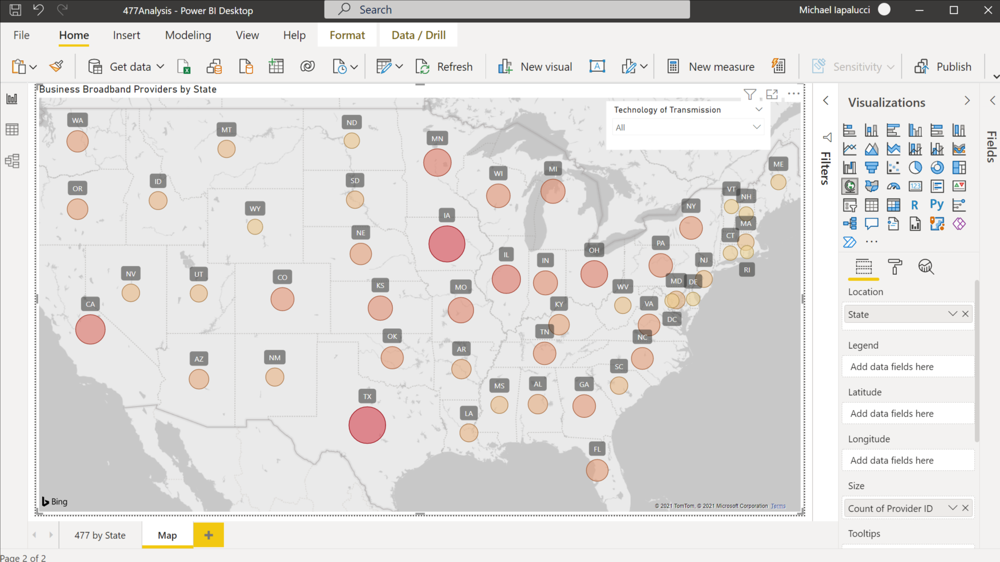

Accessing FCC 477 Data with PowerBI
Posted on Sun 31 October 2021 in PowerBI
In my last post, I demonstrated how to use the FCC 499 data to create a choropleth map. In this post we'll look at another great FCC data set, Form 477 filers.
The FCC requires all US broadband providers to provide data on where they provide broadband services at the census block level in the Form 477 twice a year on June 30 and December 31. This year, due to Hurricane Ida, the FCC extended the June deadline to October 1. The census block data is required of fixed providers as opposed to mobile providers. We will be looking at the fixed providers data. You can find more information about this filing at Form 477.
This is a big data set. The October 14, 2021 update has 75.3 million rows and 15 columns. Given Excel's current limit of 1,048,576 rows, it is clear that we need another tool to analyze these data. My first option was to pull it into a SQLite database. This works well for doing some initial EDA and slicing out a subset of data that can then be analyzed in Excel or a Pandas DataFrame. Then I thought, why not try PowerBI. I can import directly from a web link. Even with a PC with only 8 GB of memory, I was able to create a nice visualization that can easily be refreshed as the data is updated.
Data Ingestion
These data have the following columns (image taken from the FCC website):

To get started, select the Web option from the Get data option from the PowerBI tool bar. Enter the link for the CSV download from Form 477 data link. This will pull in all the data into a table. We'll call this table 477Data. This will take a while depending on your internet connection given the amount of data.
Once this is done, we need one more table to make interpreting the data a little easier. In the data dictionary, you'll notice a column called Technology Code. This provides the type of technology that the provider offers to supply the broadband connection. As stated, this is a two digit numeric code. To get the details about what these codes mean, we need to go to Technology Codes Used for Fixed Broadband Deployment.
Let's pull these data in the same way we did with the first table. This one will go much faster. Use the Get data option from the tool bar, select Web again and enter the url from the link above. Once the connection is established, you will be presented with a number of options to create tables from the page. Select the first option from HTML Tables called Table 1. This will parse all of the tech codes and their description from the HTML. Select Load and rename this table TechCodes.

Now we should have all the data we need to create our visualizations. PowerBI is really amazing in the way it can figure out the data format from Web sources and easily parse out what you need whether it is CSV or HTML.
Linking the Tables
Before we do our visualizations, let's join the tech codes columns between our two tables. The two columns to join are:
477Data: Technology Code
TechCodes: Code

Visualizations
Now that all of our data is ingested and joined, we can build some visualizations. The first one is a simple summary that shows the number of unique providers by state in a horizontal bar chart along with a table that summarizes the number of providers by technology type. I have also included a bunch of slicers, a key PowerBI feature, that allows you to limit the data displayed by technology type as well as whether the service is provided to businesses and/or consumers.

Last is a choropleth map with the unique number of providers for each state. Choropleth maps are not a strong feature for PowerBI. As you see from the map, you can only create circles that represents the relative number of providers that are layered on top of the map. Unlike a true choropleth that would fill in the boundaries of the state and present the relative value as a color on a spectrum. You can't see it on this view of the map, but PowerBI doesn't know where to locate US territories by the two character state code used in these data. Puerto Rico for example is located in Brazil. If mapping is important, I recommend using another tool.

That's it for this post. Hope you enjoyed it and learned a little about the FCC 477 data set and PowerBI.